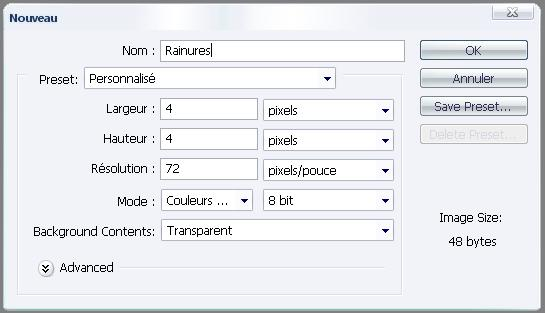
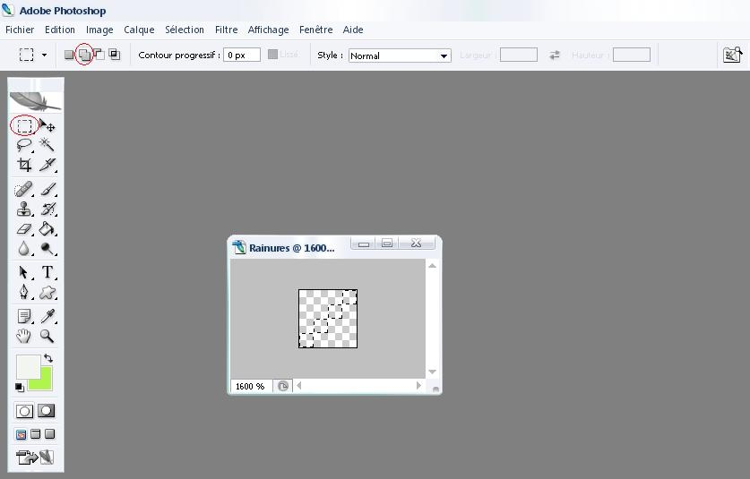
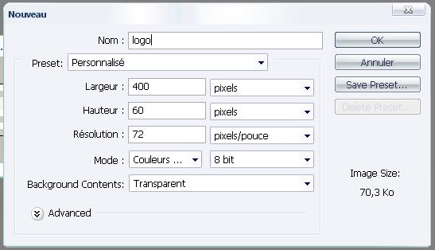
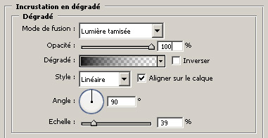
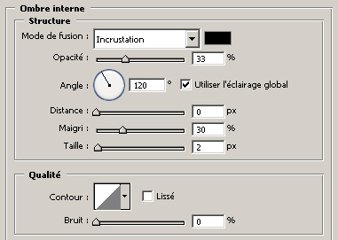
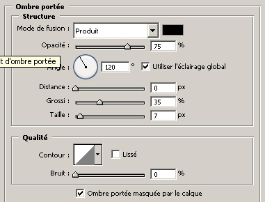
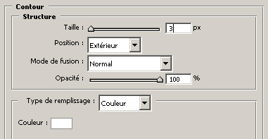
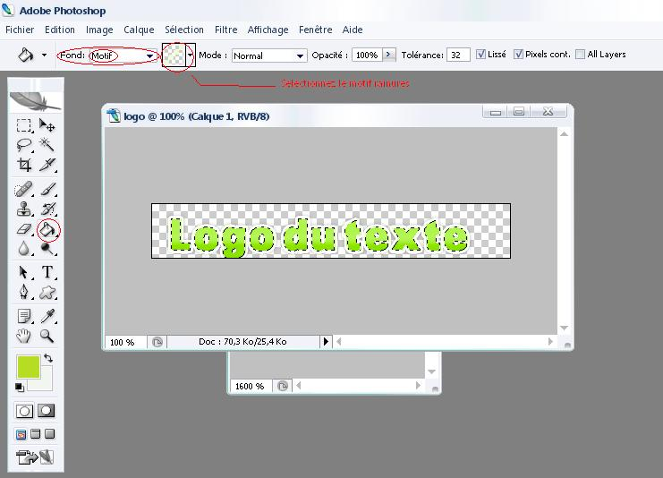

- Créer un nouveau document :

- Zoomez le au maximum
- Selectionnez quatre pixels en diagonale :

- Prenez le Pot de peinture puis colorier la selection avec une couleur blanchâtre ( ex : #f6f6f6 )
- Une fois celà terminé, faites Ctrl + D puis Edition >> Utiliser comme motif...
- Créez un nouveau document :

- Ecrivez du texte en couleur ( #bcda3f et #FF9900 ou au choix ) avec la police SansBlack et une taille de 50pt
- Le reste se joue en options de fusion ( clique-droit sur le calque >> Options de fusion ) :

puis >>

puis >>

puis >>

- Créez un nouveau calque nommé rainures
- Faites Ctrl + Clic sur le calque de l'ecriture
- Prennez le Pot de peinture :

- Remplissez la selection
- Dans la fenêtre des calques selctionnez le calque "rainures" puis changez l'opacité à 35% et changez le mode en "Superposition"
- Enregistrez l'image au format PNG* (Portable Network Graphic) : dans le dossier Upload >> img >> Web2 >> "logo.png"
- Remplacez le fichier existant